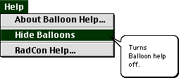

Balloon help provides the user with additional information about various features of RadCon.
Balloon help is activated by either choosing the Show Balloons command in the Help menu or by clicking the button in a dialogue box.
To use balloon help the user should move the cursor over the feature about which they are unclear. If balloon help is active and information is available it will appear in a speech balloon.

The speech balloon above informs the user that choosing the Hide Balloons command will deactivate (turn off) Balloon Help.
Balloon help is deactivated by either choosing the Hide Balloons command in the Help menu or by clicking the button in a dialog box.
Go to the Table of Contents.
This page is maintained by joe@poissonconsulting.ca
© Copyright 1999, 2000, 2001, Joseph L. Thorley and Mark Wilkinson. All rights reserved.